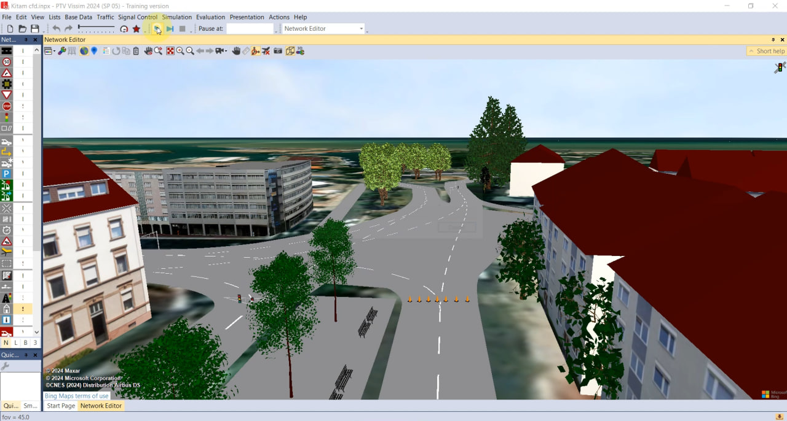
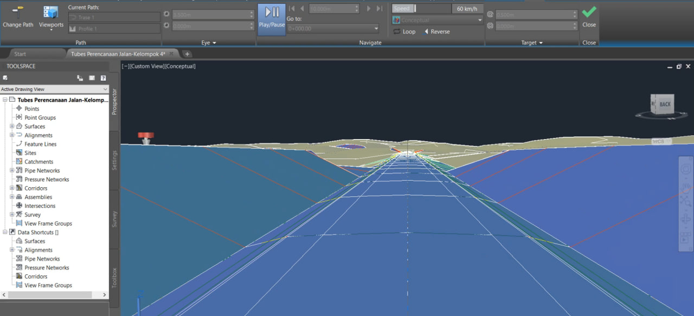
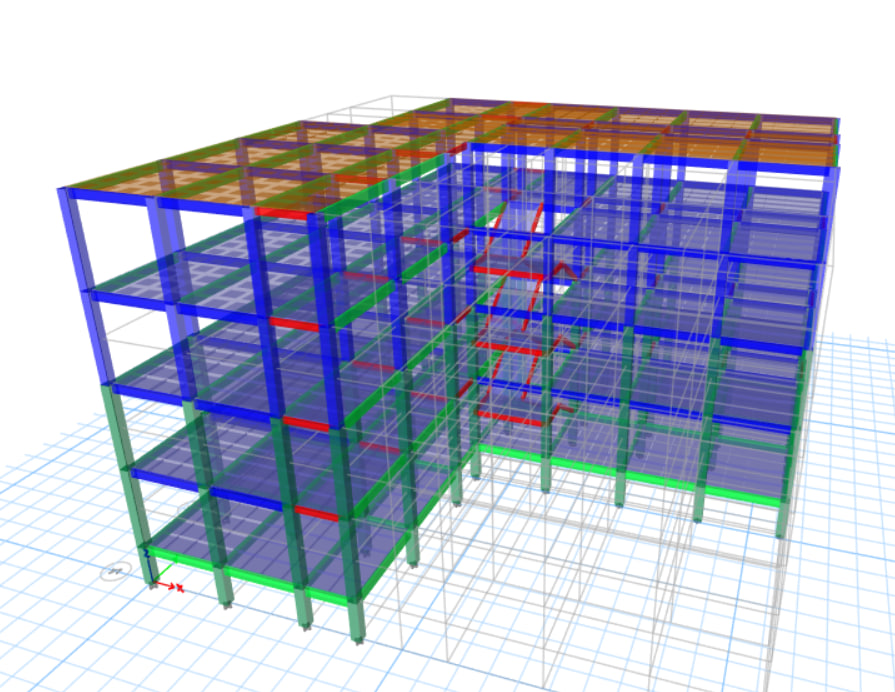
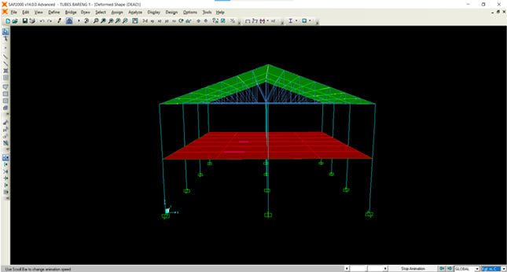
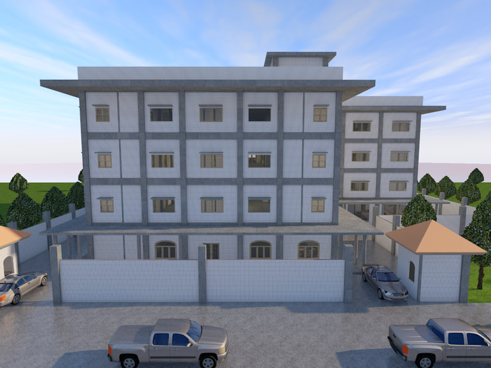
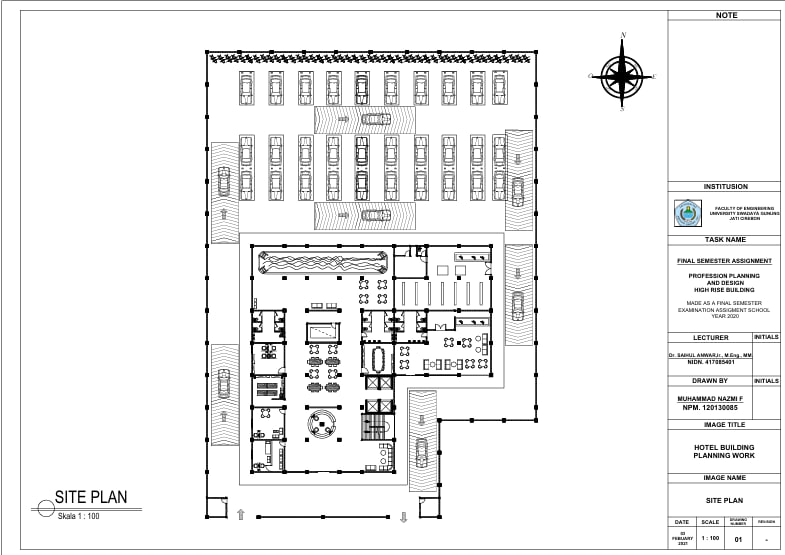
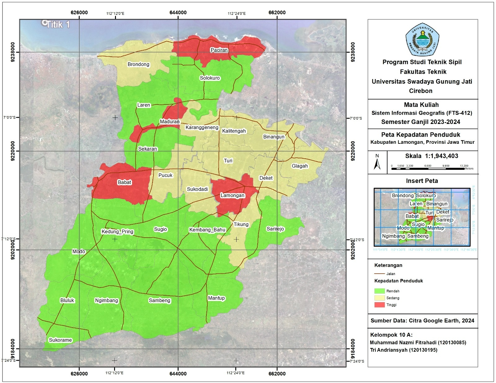
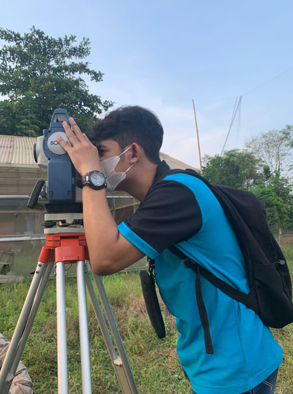

Rekapitulasi 8 Tugas Besar & Riset Ketekniksipilan

Penelitian komprehensif untuk membuktikan secara kuantitatif pengaruh penerapan CFD terhadap perubahan volume lalu lintas dan sebaran emisi gas buang kendaraan.
📄 Lihat / Download Jurnal PDF
Merencanakan trase dan geometrik jalan raya secara komprehensif dengan integrasi data elevasi digital (DEMNAS) hingga visualisasi pemodelan 3D.
📄 Lihat / Download Laporan PDF
Merencanakan dan menganalisis struktur gedung kantor beton bertulang berdasarkan regulasi SNI, mulai dari pembebanan pelat, balok, kolom, tangga, hingga pondasi.
📄 Lihat / Download Laporan PDF
Merencanakan dan menganalisis keandalan struktur bangunan baja bertingkat (gording, kuda-kuda, kolom, balok induk/anak, bondex, dan sambungan) agar mampu menahan beban rencana.
📄 Lihat / Download Laporan PDF
Mengembangkan hasil rekonstruksi gambar 2D menjadi model visualisasi 3D parametrik menggunakan ArchiCAD untuk mensimulasikan bentuk nyata bangunan, potongan 3D, dan fasad.
📄 Lihat / Download Dokumentasi PDF
Menyusun gambar kerja (shop drawing) dan rekonstruksi teknis untuk bangunan hotel 4 lantai secara mendetail (denah, tampak, potongan, dan detail struktur).
📄 Lihat / Download Gambar PDF
Mengolah data geospasial dan merancang tata letak (layouting) peta digital secara komunikatif, presisi, dan estetik sesuai standar kartografi.
📄 Lihat / Download Peta / Laporan PDF
Pemetaan topografi dan pengukuran kontur lahan di lapangan, pengolahan data koordinat via Excel, pemodelan kontur 3D via Surfer, dan gambar peta situasi via AutoCAD.
📄 Lihat / Download Laporan PDF